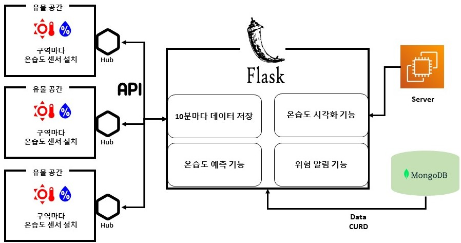
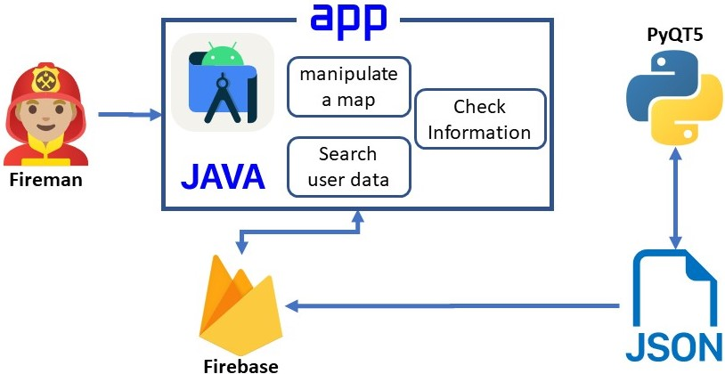
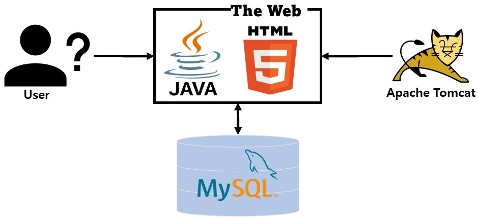

Name: 백승진
Profile: Backend developer
Email: qor27980309@gmail.com
Education: 충북대학교 소프트웨어
Address: 충청북도 청주시 서원구
Programming Language
사용하기 쉽고 효율적인 서비스를 제공하는 개발자가 저의 꿈입니다.
한번 시작한 것은 끝까지 해내려는 "강한 책임감"
좋은 결과를 얻기 위해 세우는 "높은 계획력"
어떤 일이든 최선을 다하는 "근면 성실함"
이러한 모습들을 가지고 저의 꿈과 한 걸음더 가까워지고 싶습니다.
취득날짜 : 2022.06.17
발급기관 : 한국산업인력공단
취득날짜 : 2022.12.02
발급기관 : 한국데이터진흥원
취득날짜 : 2021.09.03
발급기관 : 대한상공회의소
평가날짜 : 2022.05.21
기관 : 정보통신기획평가원
3개의 프로젝트
기계학습을 활용한 유물공간 예측관리시스템(팀 프로젝트 3인)
Contents
Why
What
Conception
Used Skills
● HTML, CSS, JS, BootStrap
● Flask, Mongo DB, Aws EC2
● Api, Plotly, TensorFlow
● heyhome Smart Sensor, Hub
My Role
● python Flask를 이용하여 웹페이지 기능구현
● Tensorflow의 LSTM모델을 이용한 온습도 예측시스템
● MongoDB를 이용하여 Database 구축
● AWS EC2의 ubuntu로 서버 활성화
Result
Review:
Github link -> WC-Project
소방작전지도 애플리케이션(팀 프로젝트 4인)
Contents
PyQT5를 이용한 데이터 편집프로그램으로 Json파일 생성 -> Android Studio, Firebase RealTime DB로 어플리케이션 개발
Why
What
Conception
Used Skills
● Java, Android Studio
● python PyQt5, Firebase
● Photo View, Android Sliding Up Panel library
My Role
데이터 편집 프로그램의
● Python PyQt5를 이용하여 아케이트 위치 수정 기능 구현
● Python PyQt5를 이용하여 진입로 위치 수정 기능 구현
Result
Review:
Github link -> Fireman
충북대 음식점 추천 사이트(개인 프로젝트)
Contents
Why
What
Conception
Used skills
Frontend
● HtmlBackend
● JspResult
Review:
Github link -> selectfood